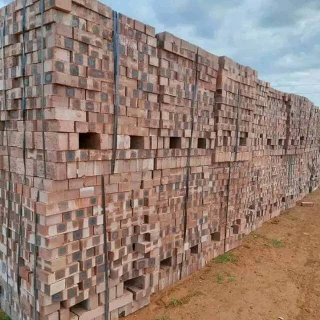
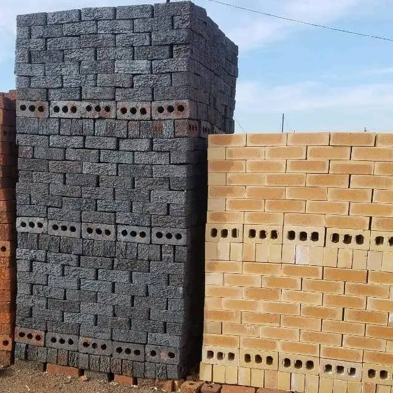
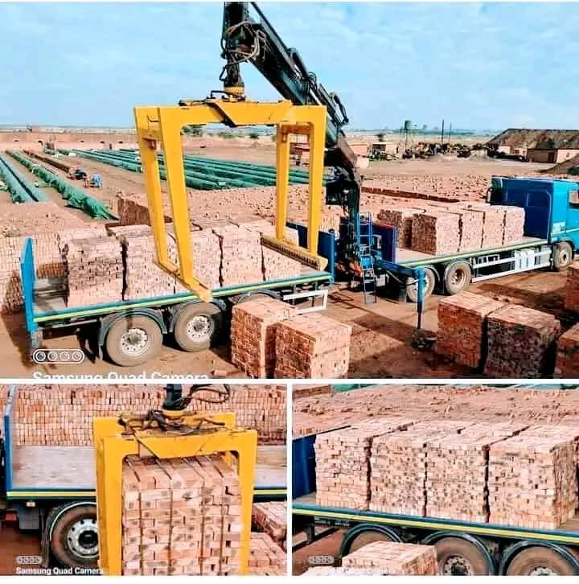
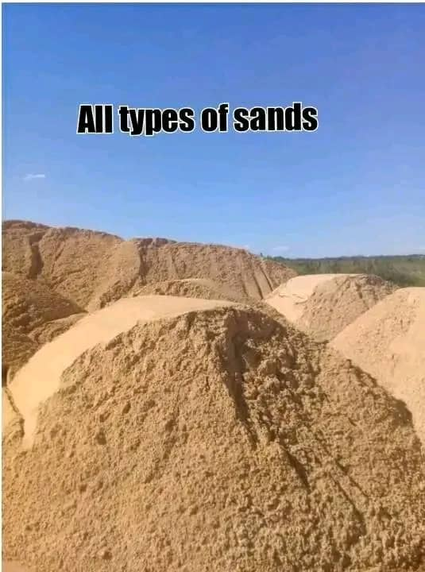
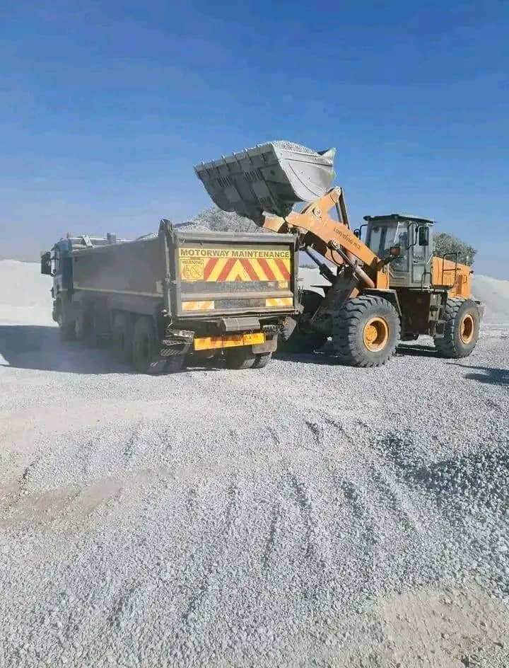
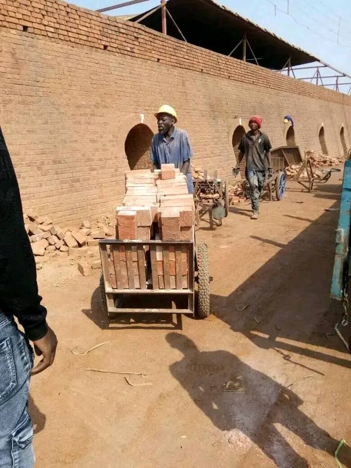
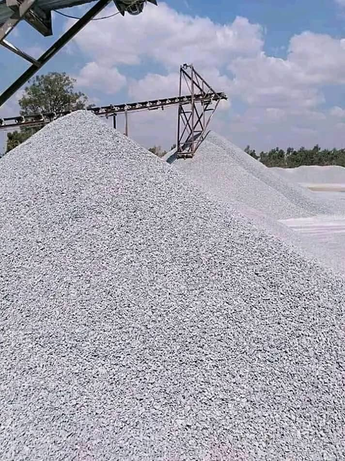

Siyakha Bricks
Home
Contacts
About Us
Welcome to Siyakha Bricks, your premier destination for top-quality building materials in Harare and its surrounding areas. With over a
decade of unwavering commitment to supplying superior bricks, sand, quarry stone, and an array of building materials, we pride ourselves on
being the go-to supplier for all your construction needs.

At Siyakha Bricks, our mission is clear: to deliver excellence with every order. Our extensive experience has honed our understanding of
the construction industry, allowing us to provide materials that meet the highest standards of durability, reliability, and functionality.

Convenience is at the heart of what we do. We understand the urgency of your projects, which is why we offer swift and efficient delivery
services within Harare and its environs. What sets us apart is our flexibility—we offer zero deposit on deliveries, ensuring your
convenience by collecting payment upon arrival along with your ordered items.

Our commitment to customer satisfaction drives us to maintain a diverse inventory, ensuring we cater to various project requirements.
Whether you're a contractor, developer, or homeowner, Siyakha Bricks is your trusted partner for all things building-related.

We take immense pride in our reputation for reliability, quality, and customer-centric service. Experience the difference with Siyakha
Bricks—where dedication meets superior quality, delivered right to your doorstep.

Thank you for choosing Siyakha Bricks for your building material needs. We look forward to serving you and contributing to the success of
your projects.

